Retour
Page précédente
Page suivante
QCM : Les formations de versant - Auto-évaluation
Roches et Gravité: ça remue !
1. Cette vidéo traite d'un glissement de terrain, qui s'est produit le 21 avril 2016 à Samoens en Haute-Savoie. Quels sont les messages principaux de l'agent du Service de la RTM (Restauration des Terrains en Montagne) ?
Votre navigateur ne supporte pas la lecture de cette vidéo.
A) Il est important d'entretenir les arrivées d'eau, les sources et les systèmes de drainage de l'eau, et ces tâches d'entretien étaient mieux assurés dans le passé dans le cadre de toutes les activités agricoles.
B) Une fois que le terrain a glissé, cela ne bougera plus
C) La végétation empêche complètement les glissements de terrain
D) Les petites pentes sont sûres
E) Les séismes n'interviennent seulement que comme élément déclencheur.
F) On ne peut pas empêcher les glissements de terrain, car ils font partie des processus érosifs normaux dans les montagnes. On peut seulement les ralentir.
G) C'est l'eau qui est le principal responsable des glissements de terrain.
Commentaire:
L'eau est le principal responsable des glissements de terrain. Les instabilités de versant font partie des processus érosifs normaux dans les montagnes. Il est illusoire de les empêcher, mais un bon entretien des systèmes de drainage peut ralentir leur survenue. Les séismes peuvent intervenir comme élément déclencheur.
2. Sous quel autre nom sont désignés les dépôts, appelés ici
Grouine Périglaciaire
? (source: carte géologique au 1/50 000 de Bourmont)
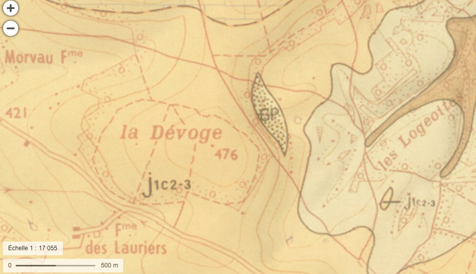
×
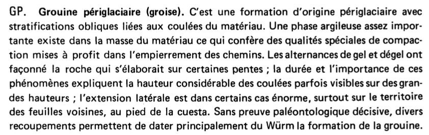
×
A) Frèzes litées
B) Brèzes litées
C) Glèzes litées
D) Grèzes litées
Commentaire:
Les
grèzes litées
sont des dépôts formés par l'accumulation et le tri des fragments rocheux dans les environnements périglaciaires, souvent associés à des cycles de gel et de dégel.
3. Ci-dessous une photo d'une carrière de grouines en Lorraine. Dans quels endroits retrouve-ton ces dépôts ?
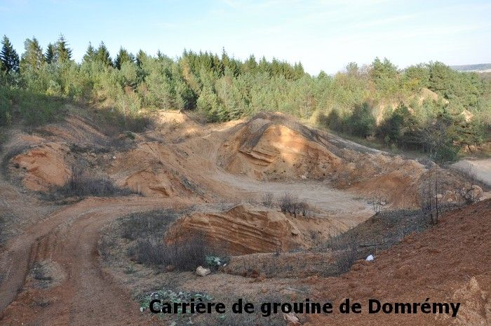
×
A) Dans les plaines alluviales.
B) Sur les plateaux
C) Sur les versants
D) Dans des dépressions creusées par l'érosion
Commentaire:
Les grouines (grèzes litées) se retrouvent principalement sur les versants. Elles résultent de processus périglaciaires, notamment le gel-dégel, qui favorisent la fragmentation et l'accumulation des matériaux rocheux sur les pentes.
4. Dans quel cas utilise-t-on l'expression
en aval pendage
?
A) Pour désigner des formations ayant un pendage dans le même sens que la pente du versant.
B) Pour désigner des formations ayant un pendage contraire à la pente.
C) Pour désigner des formations ayant un pendage plus faible que la pente.
D) Pour désigner des formations ayant un pendage plus fort que la pente.
Commentaire:
L'expression en aval pendage est utilisée pour décrire une situation où les formations géologiques présentent un pendage dirigé vers l'extérieur des terres et qui sont donc disposés dans le même sens que la pente 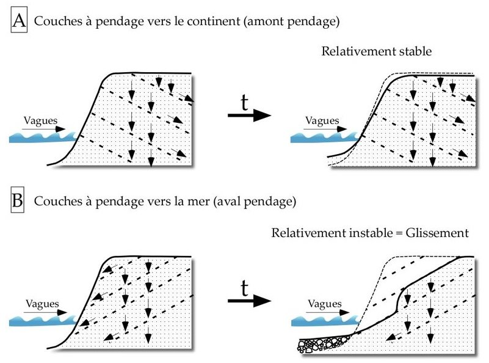
5. Le 24 août 1987, le torrent de Saint-Antoine connaît une crue majeure. Au vu des dégâts constatés sur les photos de l'époque et compte tenu du contexte, quel est le phénomène à l'origine de ces dépôts (et dégâts) ?
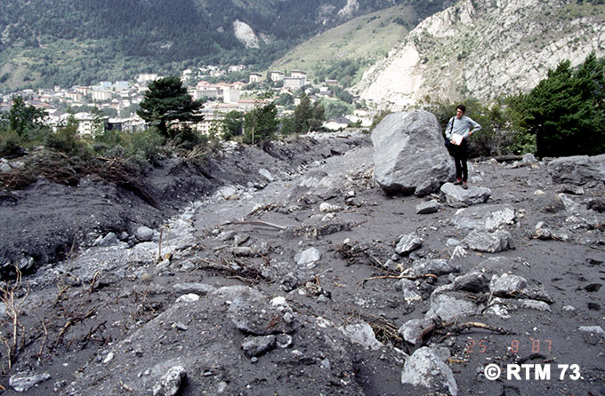
×
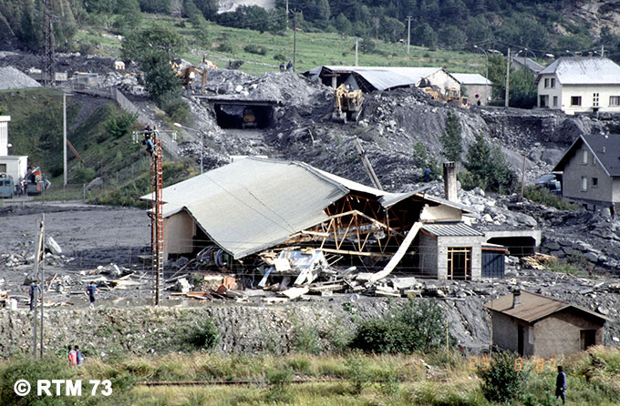
×
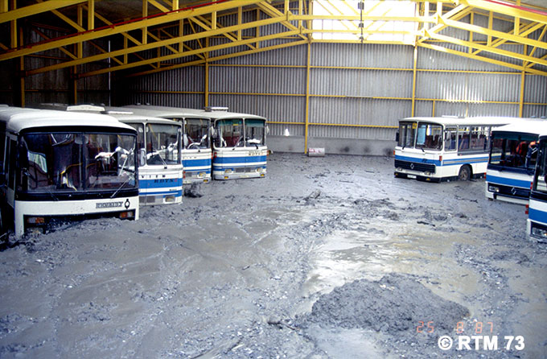
×
A) c'est un éboulement.
B) c'est un lahar.
C) c'est un effondrement.
D) c'est une lave torrentielle.
Commentaire:
La 1ère photographie montre des dépôts très hétérométriques avec des rochers de taille métrique mélangés avec des blocs plus petits et une importante fraction argileuse sans tri granulométrique. Ce sont des dépôts de la partie frontale de la lave de torrentielle, un phénomène très destructeur et érosif, similaire aux lahars, mais ce dernier terme est réservé aux laves torrentielles issues de matériaux volcaniques. La dernière photographie montre des dépôts boueux, sans blocs, correspondant à la partie fluide de la
queue
de la lave torrentielle.
6. Quel phénomène est présenté par cette expérience filmée ?
Votre navigateur ne supporte pas la lecture de cette vidéo.
A) Suffosion
B) Liquéfaction de sols
C) Retrait-gonflement d'argiles gonflantes
D) Mise en suspension d'argiles
Commentaire:
La liquéfaction des sols est un phénomène géologique où un sol saturé en eau perd temporairement sa cohésion et se comporte comme un liquide sous l'effet de contraintes, généralement dues à des vibrations intenses comme celles provoquées par un séisme. Ce phénomène se produit principalement dans des sols sableux ou limoneux peu consolidés, saturés d'eau.
7. Que sait-on sur la liquéfaction ?
Votre navigateur ne supporte pas la lecture de cette vidéo.
A) La liquéfaction n'est jamais provoquée par des séismes.
B) La liquéfaction se produit après une longue période de sécheresse.
C) La liquéfaction des sols est déclenchée par des vibrations sismiques, qui détruisent l'arrangement initial des grains du sol.
D) La liquéfaction est responsable d'inondations boueuses très graves.
E) La liquéfaction concerne des sols saturés en eau, notamment après une forte pluie.
F) La liquéfaction se traduit par un affaissement des terrains et l'expulsion de l'eau en surface.
G) La liquéfaction ne concerne que des terrains à sec, sans intervention de l'eau.
Commentaire:
La liquéfaction se produit fréquemment dans les sols sablonneux ou argileux saturés en eau lorsqu'ils subissent des vibrations ou des chocs, comme lors d’un séisme. Ce phénomène peut provoquer des effondrements, des glissements de terrain, et des dégâts aux structures bâties.
8. Cette vidéo a été tournée juste après un séisme au Japon. Que pouvez-vous expliquer à la jeune fille japonaise visiblement très effrayée par ce qui se passe ?
Votre navigateur ne supporte pas la lecture de cette vidéo.
A) Le problème est sérieux, il peut y avoir ruine partielle et totale des bâtiments, ainsi que des pertes humaines.
B) Le phénomène est brutal, mais temporaire. Le sol va retrouver sa consistance solide.
C) Il faut vite aller se réfugier à l'étage dans un immeuble.
D) C'est un phénomène de liquéfaction des sols.
E) Ce n'est pas de la liquéfaction des sols. C'est juste une inondation provoquée par la rupture des conduites d'eau.
Commentaire:
La liquéfaction des sols survient lorsqu'un séisme perturbe des sols saturés en eau, les faisant perdre leur cohésion et se comporter comme un liquide. Cela peut provoquer des dégâts importants, mais une fois les vibrations dissipées, le sol redevient solide. Il est essentiel de rester vigilant et d'évacuer si des dommages structurels sont observés.
9. Cette vidéo montre un chantier avant son terrassement par une pelle mécanique. Mais les ouvriers vont avoir une grande surprise. L'un deux s'exclame : "That's crazy". Que pouvez-vous leur dire ?
Votre navigateur ne supporte pas la lecture de cette vidéo.
A) Il n'y a pas d'eau dans ce sol, cela ne peut pas être de la liquéfaction.
B) C'est un sol tourbeux, pas un sol liquéfié. On est sur une ancienne tourbière.
C) Ce sont des argiles gonflantes.
D) C'est un sol liquéfié, car saturé en eau.
Commentaire:
La liquéfaction survient lorsque le sol saturé en eau perd sa cohésion sous l'effet d'une surcharge ou de vibrations, se comportant temporairement comme un fluide. Dans un tel cas, des précautions doivent être prises avant de poursuivre les travaux pour éviter des accidents ou des effondrements.
10. Cette photo montre une dispositif de protection aménagé en bas d'un versant instable, sujet à des chutes de blocs ou glissements de terrain. Il est constitué d'un fossé et d'une levée de terre renforcé par un enrochement drainant du côté du versant. Comment appelle-t-on ce dispositif ?
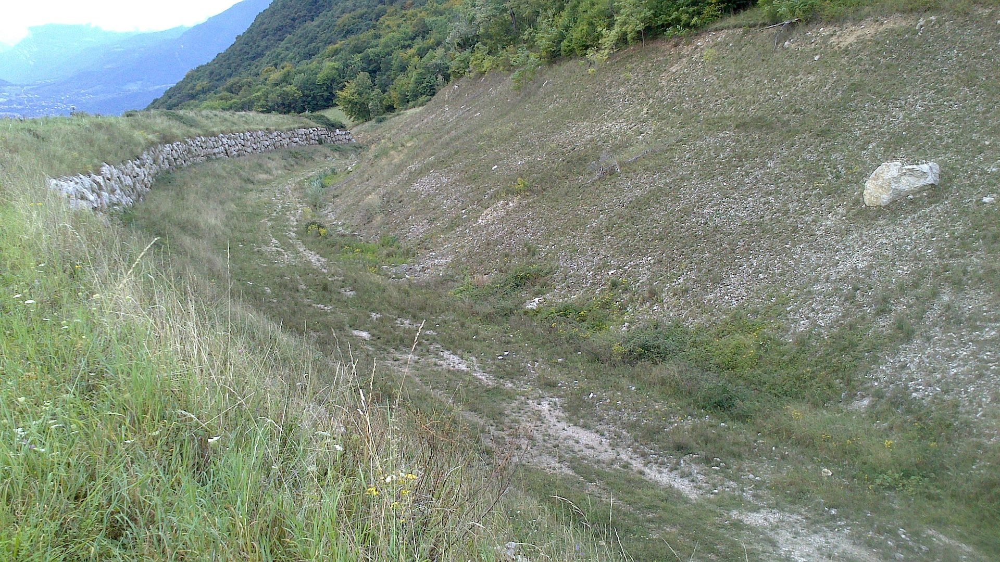
×
A) Un meulon
B) Un perlon
C) Un merlon
D) Un pierrier
Commentaire:
Un merlon est un dispositif de protection contre les risques de chutes de pierres ou de glissements de terrain. Il sert à canaliser les matériaux et à protéger les infrastructures situées en bas du versant.
11. "Five minutes ago, we were there !". Que s'est-il passé ?
Votre navigateur ne supporte pas la lecture de cette vidéo.
A) C'est un glissement plan de formations argileuses.
B) C'est une coulée de blocs et débris rocheux.
C) C'est un glissement-coulée de formations argileuses, proches de leur limite de liquidité.
D) C'est un glissement rotationnel de formations argileuses.
Commentaire:
Un glissement-coulée de formations argileuses proches de leur limite de liquidité est un phénomène où les sols saturés d'eau deviennent instables et coulent rapidement en raison de la perte de cohésion, souvent après une forte pluie ou un séisme.
12. Quels sont les principales causes des glissements de terrain ?
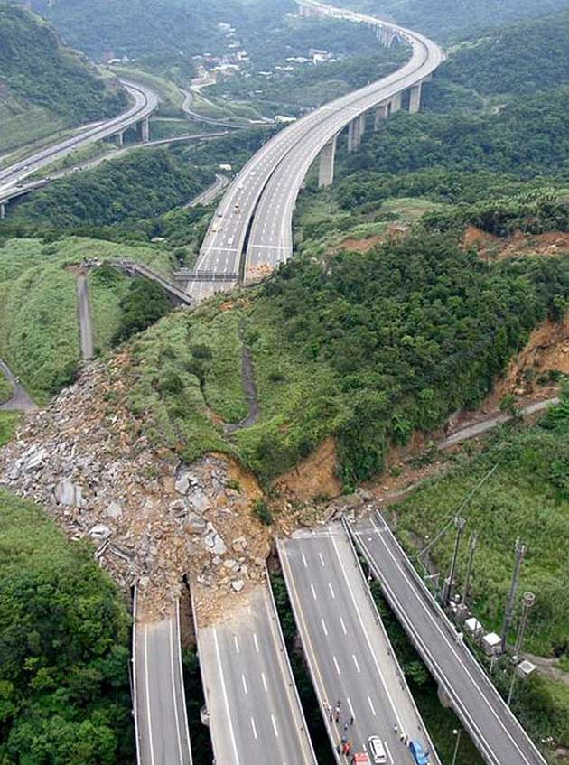
Glissement de terrain à Taïwan, le 27 avril 2010
×
A) Une surcharge en tête du versant.
B) Un engorgement en eau d'un versant mal drainé.
C) L'action d'organismes fouisseurs (comme les taupes) qui fragilisent le versant.
D) Un ébranlement sismique.
E) La présence de cavités souterraines.
F) Le déblaiement de la base d'un versant (pour construire une route ou une ligne de chemin de fer, par exemple).
Commentaire:
Les principales causes des glissements de terrain sont liées à des changements dans la stabilité du versant, comme une surcharge (construction), un déblaiement, une mauvaise gestion de l'eau, ou des perturbations externes comme des tremblements de terre.
13. Quelle est la vitesse de déplacement des matériaux dans un glissement de terrain ?
A) Ce sont sont toujours des phénomènes très rapides. Vitesse de l'ordre du mètre par seconde.
B) C'est très variable. Cela va de quelques millimètres par an à plusieurs mètres par seconde.
C) Ce sont toujours des phénomènes très lents. Vitesse de l'ordre du millimètre au centimètre par an. On a toujours le temps d'en réchapper.
14. A quoi reconnaît-on un glissement de terrain rotationnel ?
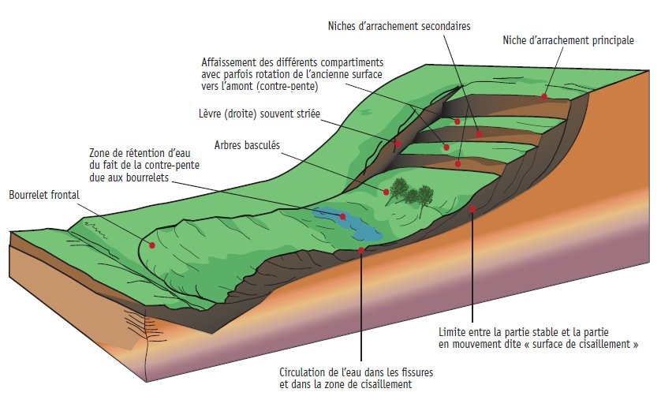
×
A) La présence de bourrelets et une convexité du terrain vers le haut en bas du glissement.
B) La présence de cuvettes mal drainées et de contrepentes.
C) La présence de cicatrices d'arrachement en haut du glissement, mettant à nu le sous-sol.
D) La présence de cicatrices d'arrachement en bas du glissement.
E) Des panneaux chevauchants en haut du glissement.
Commentaire:
Un glissement de terrain rotationnel se caractérise par des cicatrices d'arrachement en haut du glissement, un terrain convexe au bas, et des zones mal drainées pouvant former des cuvettes.
15. Comment s'appelle le service administratif en France, dépendant de l'administration des Eaux et Forêts, chargés de la lutte contre les instabilités de versant en montagne ?
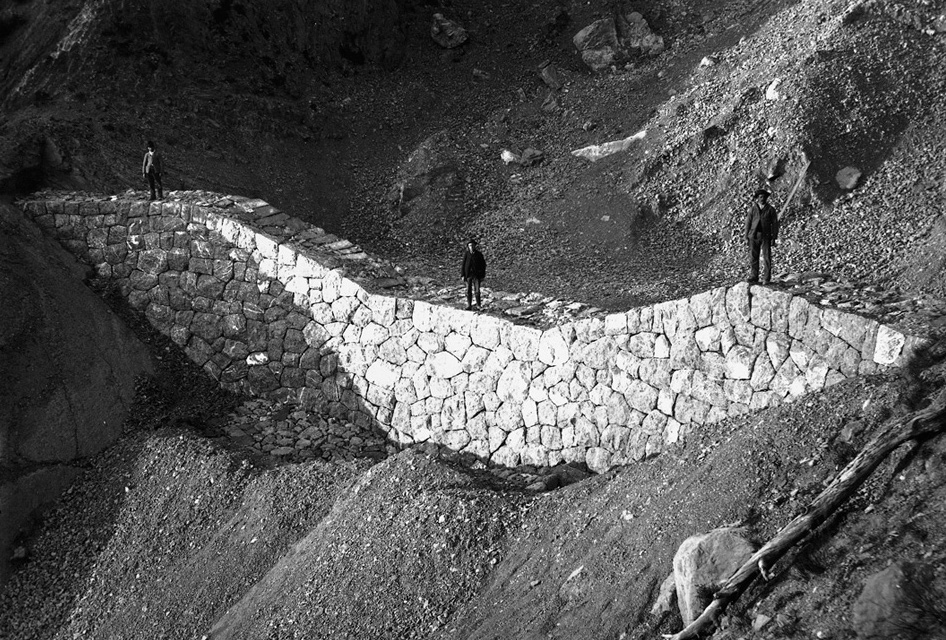
×
A) le service de la RTM ( Restauration des Terrains En Montagne )
B) le service de la PTM ( Protection des Terrains en Montagne )
C) le service de la GeTM ( Gestion des Terrains en Montagne )
D) le service de la SaTM ( Sauvegarde des Terrains en Montagne )
Commentaire:
Le service de la RTM est spécialisé dans la prévention et la réparation des risques liés à l’instabilité des versants en montagne, notamment par l’aménagement de dispositifs de protection tels que les murs, les drains, et les enrochements.
16. Quelle est la politique de lutte contre les instabilités de terrain en montagne ?
A) Urbanisation.
B) Déforestation.
C) Défrichement
D) Renaturation des versants (reboisement, réengazonnement).
Commentaire:
Cette politique vise à stabiliser les sols et à réduire les risques de glissements en réintroduisant de la végétation, qui favorise la rétention d'eau et l'ancrage du sol.
17. Comment s'appellent les cours d'eau des régions semi-désertiques d'Afrique du Nord, qui sont à sec, la plus grande partie du temps, mais qui peuvent connaître des crues dévastatrices et spectaculaires ?
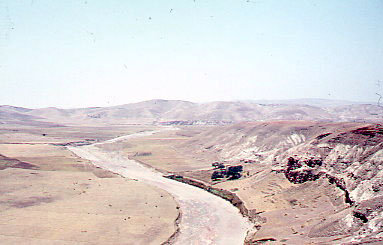
Au Maroc
×
A) Des barkhanes
B) Des ergs
C) Des oueds
D) Des regs
Commentaire:
Les oueds sont des lits de rivières temporaires, caractéristiques des zones arides où l'eau circule seulement lors de fortes précipitations.
18. Où se trouvent les plus grands cônes de déjection en France ?
A) En Bretagne
B) Dans le Massif Central
C) Dans les Alpes
D) Dans le Bassin Parisien
Commentaire:
Les Alpes, avec leur relief montagneux et leurs nombreux torrents, abritent les plus grands cônes de déjection, formés par les accumulations de débris provenant de l'érosion de reliefs élevés
Corriger
Recommencer